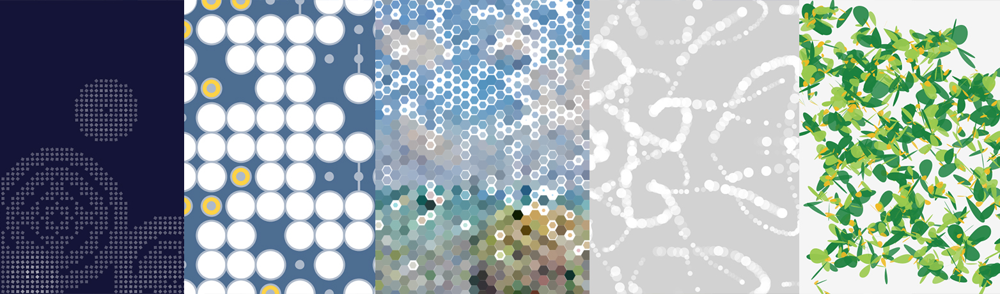

U_MONTH
processing诗歌意象视觉化 根据林白《过程》现代诗的意象进行视觉化呈现该作品是本人分析诗歌意象，提取相关图形，参考相关作品和本人以前的作业，利用Processing编程制作的可交互视觉化练习
过程 文/林白
一月你还没有出现 二月你睡在隔壁 三月下起了大雨 四月里遍地蔷薇 五月我们对面坐着，犹如梦中 就这样六月到了 六月里青草盛开，处处芬芳 七月，悲喜交加 麦浪翻滚连同草地，直到天涯 八月就是八月，八月我守口如瓶 八月里我是瓶中的水，你是青天的云 九月和十月，是两只眼睛，装满了大海 你在海上，我在海下 十一月尚未到来 透过它的窗口，我望见了十二月 十二月大雪弥漫
扫码查看程序录屏（密码111111）：